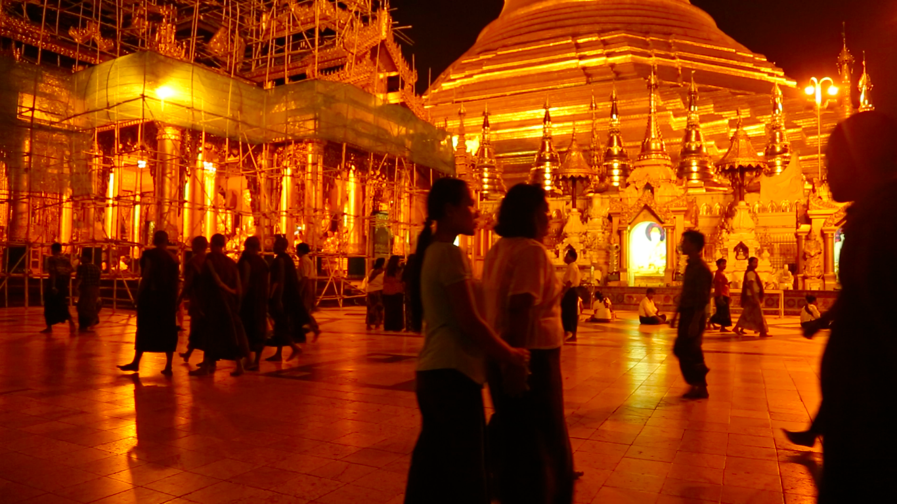
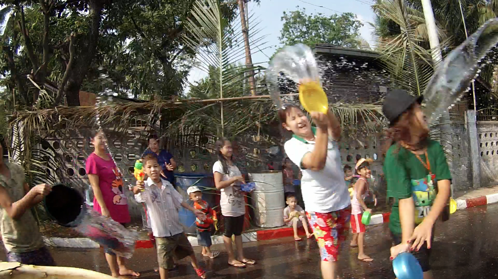
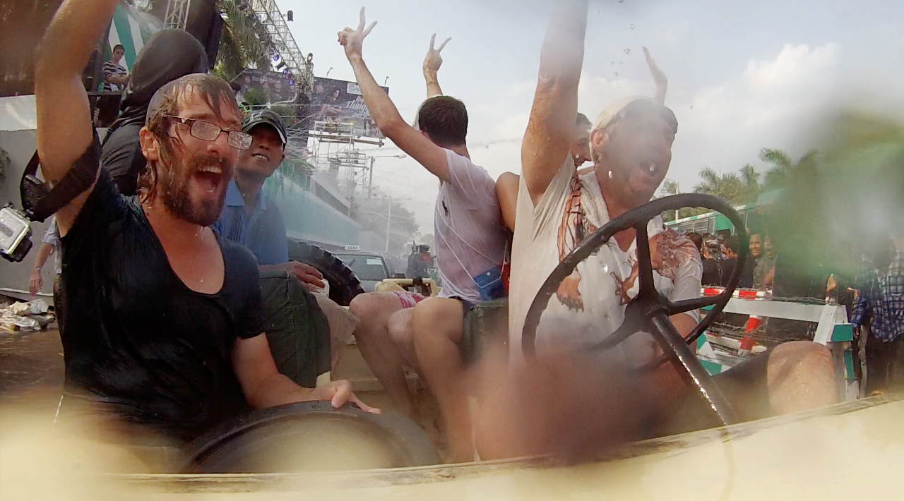
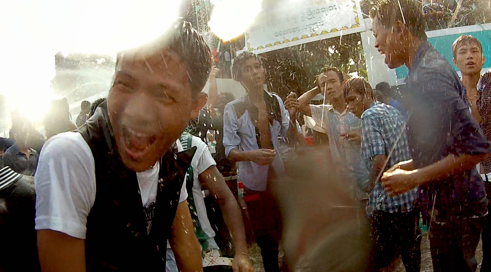
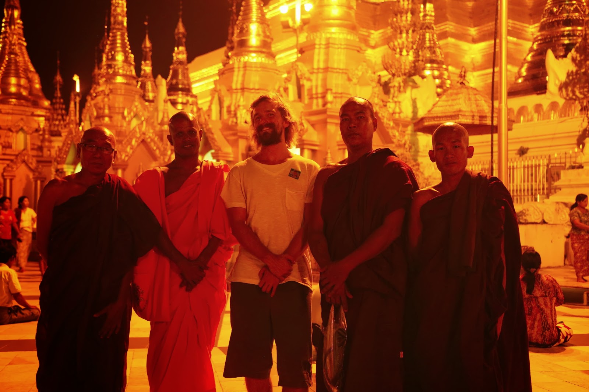

Nous atterrissons à Rangoon, et sommes accueillis sur la piste par des birmans dans un anglais impeccable. Lors de l’attente pour les visas, ils nous racontent même des blagues et nous montrent des tours de magie avec des cartes et des pièces de monnaie pour faire rire Clem !
Nous rencontrons ensuite la charmante famille de Hervé et Touza, qui nous expliquent que nous avons le chance d’être là durant le Festival de l’Eau : un événement annuel durant lequel, pendant une semaine, les gens célèbrent la fin de la saison sèche en se lançant de l’eau à la figure !

Nous allons directement en centre-ville, et sommes abasourdis : la ville est transformée en une énorme discothèque à ciel ouvert, les gens sont heureux, rient et dansent au son des hauts-parleurs qui diffusent de la musique allant de la tectonik aux chants traditionnels. Les très jeunes comme les très vieux sont trempés, et s’aspergent d’eau avec tout type de récipients : du pistolet à eau en passant par le seau jusqu’aux lance-incendies qui pompent l’eau directement depuis le fleuve !
L’ambiance est survoltée, et les gens viennent vers nous nous inclure dans leurs jeux et leurs danses, des moines demandent même à Adrien s'ils peuvent être photographiés à ses côtés, car il « est originaire du pays des blonds » ! On ADORE ce pays !



